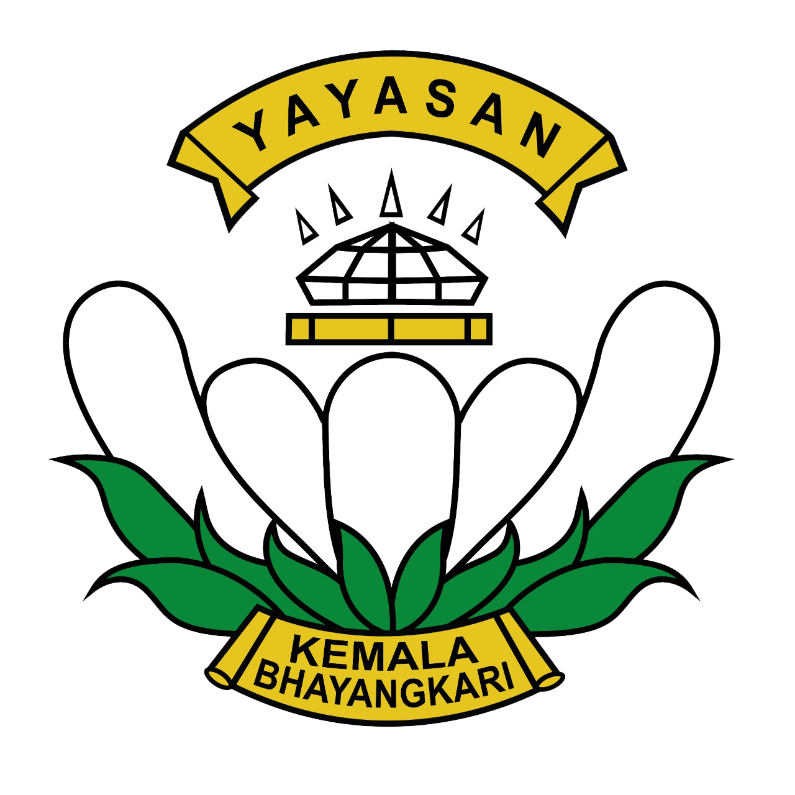
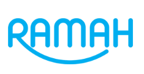

Memahami pentingnya MPI
Guru memahami pentingnya penggunaan Media Pembelajaran Interaktif.

SEKOLAH
RAMAHSMA KEMALA BHAYANGKARI 3 PORONG
Rangkaian tindak lanjut pengembangan
Media Pembelajaran Interaktif.
GAMBARAN KEGIATAN / 01
Pilih kegiatan untuk membuka rincian jadwal, pihak yang terlibat, dan hasilnya.
Jadwal mengikuti tabel sumber. Kegiatan dengan tanggal yang sama tetap ditampilkan terpisah.
KEGIATAN 01 / KOORDINASI
Koordinasi tindak lanjut kegiatan.
PIHAK YANG TERLIBAT
HASIL KEGIATAN
Perencanaan bersama kepala sekolah.
Koordinasi menjadi bagian awal dalam rangkaian tindak lanjut kegiatan.
KEGIATAN 02 / FINALISASI MPI
Melakukan finalisasi Media Pembelajaran Interaktif.
PIHAK YANG TERLIBAT
HASIL KEGIATAN
Media Pembelajaran Interaktif
Tautan pada tabel sumber mengarah ke media pembelajaran statistika kelas XI.
Buka media pembelajaran ↗Membuka tab baru • memerlukan internetKEGIATAN 03 / FINALISASI RPP
Finalisasi RPP TPACK.
PIHAK YANG TERLIBAT
HASIL PADA TABEL SUMBER
Tautan dokumen RPP
Dokumen rujukan tersedia melalui Google Drive sesuai tautan yang tercantum pada gambar.
Buka dokumen RPP ↗Membuka tab baru • mengikuti izin akses pemilik dokumenKEGIATAN 04 / 1 OKTOBER 2026
Kegiatan diseminasi dilaksanakan di lingkungan sekolah.
HASIL YANG DICATAT
Guru memahami pentingnya penggunaan Media Pembelajaran Interaktif.
Guru akan menyusun MPI bersama kelompok belajar masing-masing.
KEGIATAN 05 / LAPORAN
Menyusun laporan kegiatan.
PIHAK YANG TERLIBAT
HASIL KEGIATAN
Belum dicantumkan
pada tabel sumber.
Jadwal penyusunan laporan tercatat pada 20 Oktober 2026. Kolom hasil pada gambar masih kosong.
RINGKASAN / SELURUH KEGIATAN
| Kegiatan | Jadwal | Pihak terlibat | Hasil yang dicatat |
|---|---|---|---|
| 01 · Koordinasi | 6 September 2026 | Kepala sekolah | Perencanaan bersama kepala sekolah |
| 02 · Finalisasi MPI | 6 September 2026 | Guru | Media Pembelajaran Interaktif |
| 03 · Finalisasi RPP TPACK | 6 September 2026 | Guru | Tautan dokumen RPP |
| 04 · Diseminasi | 1 Oktober 2026 | Guru dan siswa | Pemahaman pentingnya MPI; rencana penyusunan MPI dalam kelompok belajar |
| 05 · Penyusunan laporan | 20 Oktober 2026 | Guru | Belum dicantumkan |
Guru dan siswa yang dimaksud berasal dari SMA Kemala Bhayangkari 3 Porong.
LAMPIRAN / MATERI ASLI
Gambar yang menjadi dasar penyusunan presentasi. Klik untuk memperbesar.